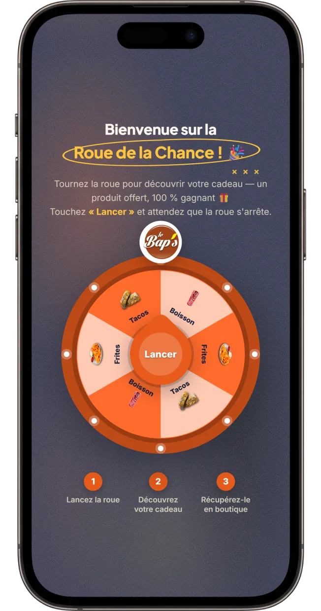
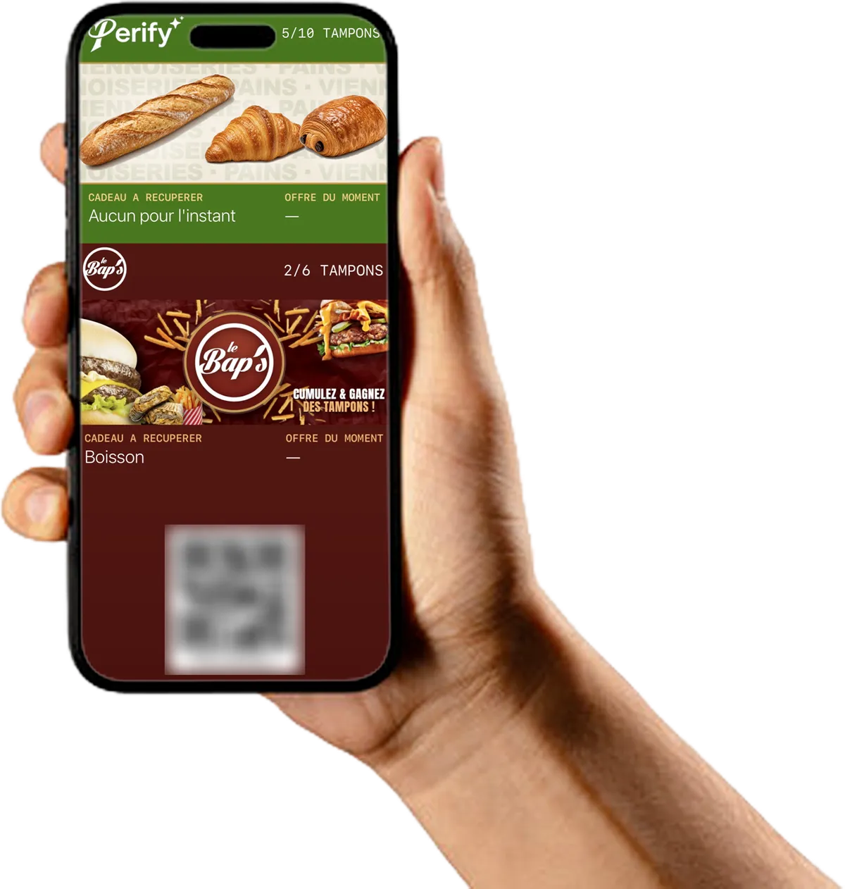
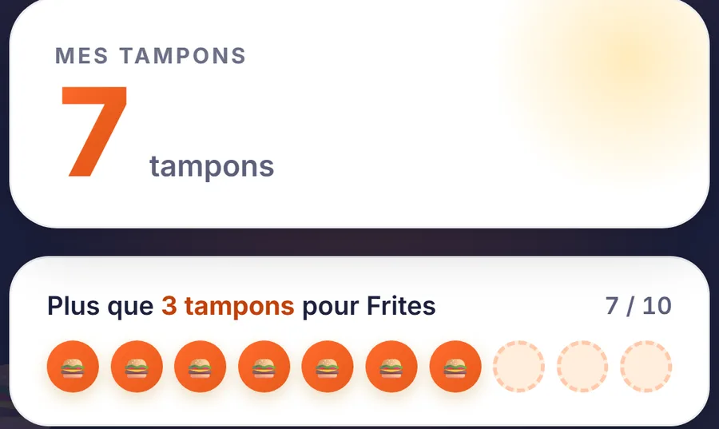

Comment ça marche
Trois gestes, et le client est fidélisé.
Rien à brancher sur votre caisse, rien à apprendre. Le présentoir est posé sur le comptoir, tout le reste se passe sur les téléphones.
-

Le client
Il scanne le présentoir
Pas de compte à créer, pas d’appli à télécharger. Sa carte s’ouvre en deux secondes, à vos couleurs. Et il tourne la roue : un cadeau de bienvenue, à chaque nouvelle carte.
-

Son téléphone
Il l’ajoute à son Wallet
La carte reste dans son iPhone, à côté de sa carte bancaire. Sur Android, elle s’ajoute à Google Wallet.
-

Votre comptoir
Il revient, il est récompensé
Chaque passage ajoute un tampon. Au palier, le cadeau apparaît avec un code que vous vérifiez en caisse.
Captures de la vraie carte, données de démonstration.
En chiffres
Études menées aux États-Unis
1. IFOP pour Guest Suite, « Les Français et les avis clients », 2023 : 92 % consultent des avis avant un achat. Voir l’étude.
2. IFOP pour Guest Suite, « Statistiques avis clients & IA », janvier 2026, 1 003 Français de 18 ans et plus. Voir l’étude.
3. SumUp, enquête « Programmes de fidélité en France », avril 2026, 1 500 Français. Voir la source.
4. Toast (logiciel de caisse pour restaurants), « Data by Toast », États-Unis, juillet 2026 : étude interne sur ses propres données de caisse, du 13 janvier au 13 avril 2026 (nombre de restaurants non publié) ; les 7 % sont les clients venus pour la première fois qui reviennent sans aucune relance. Voir la source.
5. R. Kivetz et O. Urminsky (université Columbia), Y. Zheng (université Fordham), Journal of Marketing Research, États-Unis, février 2006 : 949 cartes de 10 tampons remplies dans un café du campus d’une grande université de la côte Est. Voir l’étude.
6. BrightLocal, « Local Consumer Review Survey 2026 », États-Unis, février 2026 : 1 002 adultes américains (panel représentatif, SurveyMonkey) ; ce sont leurs réponses, pas des achats mesurés, et le chiffre ne porte que sur les personnes à qui on a demandé un avis. Voir l’étude.
7. Michael Luca, Harvard Business School, document de travail 12-016, États-Unis, 2011 : chiffre d’affaires de tous les restaurants de Seattle, de 2003 à 2009, comparé à leur note Yelp. Voir l’étude.
Essayez-le quatorze jours sur votre comptoir.
Présentoir et mise en place compris. Si ça ne vous convient pas, vous arrêtez : rien à payer, je reprends le présentoir, et les données de vos clients sont supprimées.
Essai gratuit 14 jours